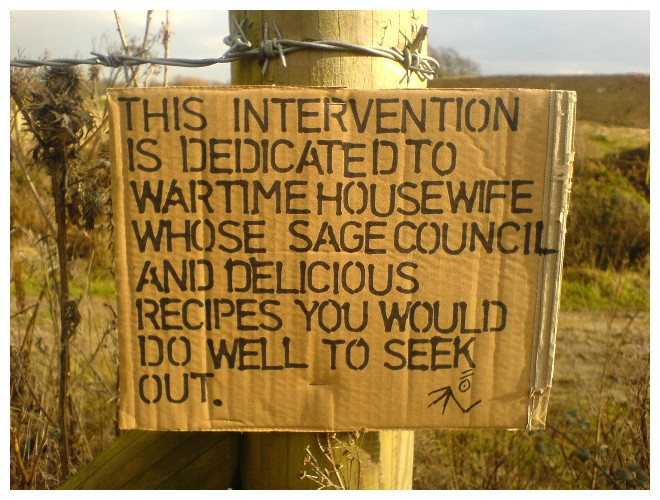

Thursday, February the 3rd, 2011
back to: title, date or indexes
Outa_Spaceman's cardboard signage initiative continues. Last time I mentioned it was to celebrate seven signs in seven days. Now we are in February and the Bonkers Man o' Bognor remains indefatigable. His latest is an interesting exercise in samizdat blog advertising, extolling the virtues of the Wartime Housewife, a sentiment which I wholeheartedly endorse.

NOTE : The title of this postage should not be thought to refer to the ridiculous M Night Shamalamawopbopdadoowop film of the same name— though I am reminded that it contains antisemitic Roman Catholic drunkard Melvin Gibson's finest screen moment. His family is terrified at the prospect that the appearance of crop circles could be a harbinger for the arrival of woefully unconvincing green scaly alien beings, so Mr Gibson says: “Everybody needs to calm down and eat some fruit or something”. This has become our watchword at Hooting Yard, so much more resonant than the blunt “Keep Calm And Carry On” recently revived by all and sundry.